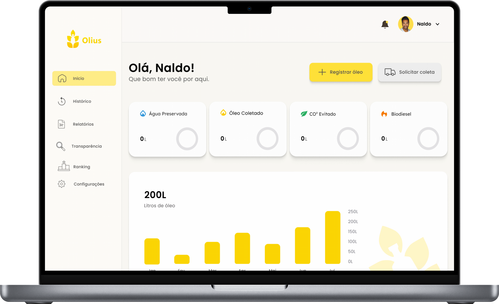
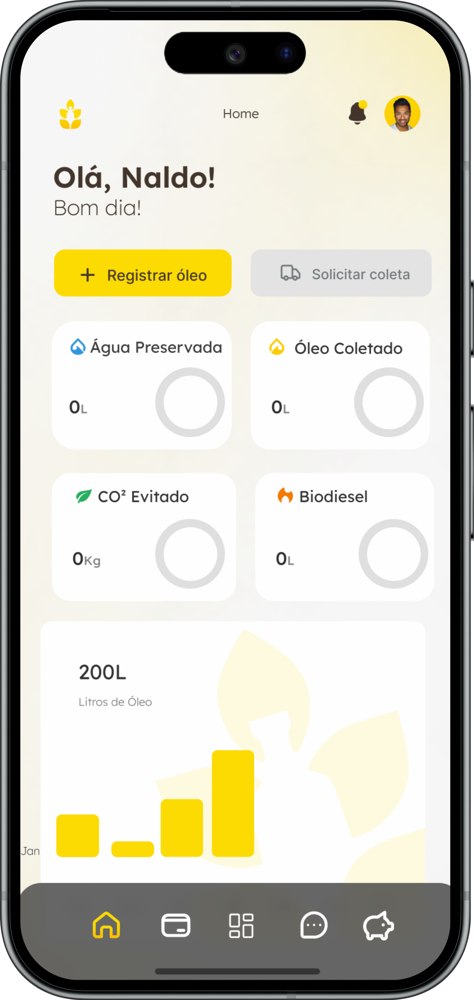
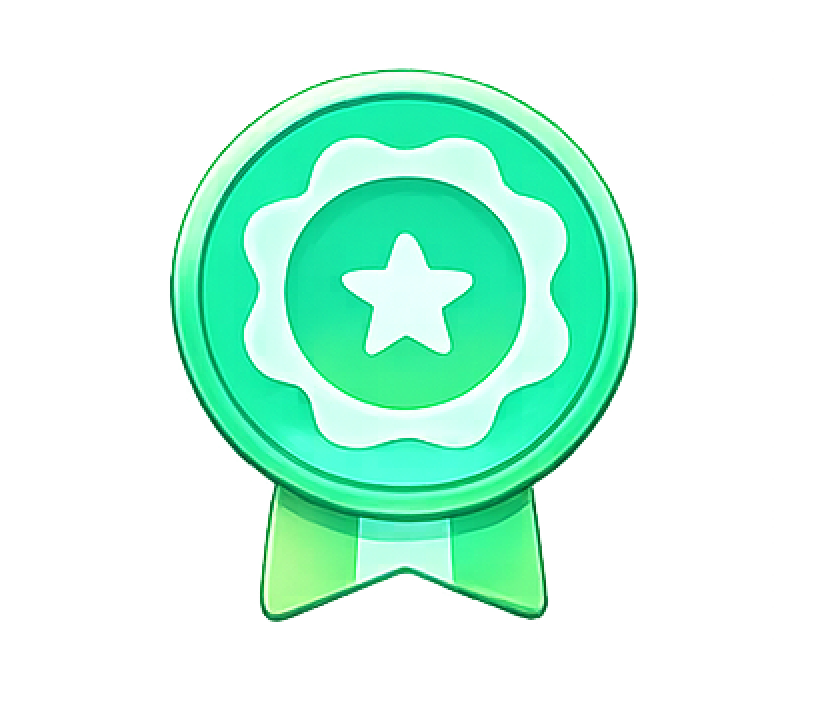
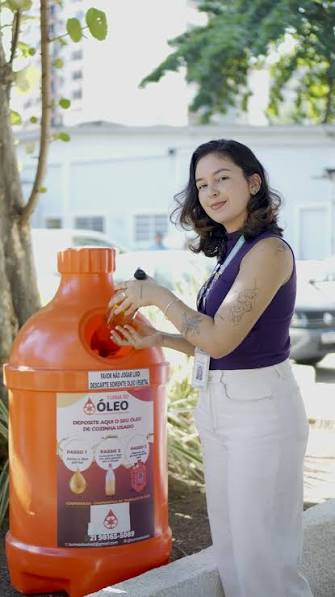
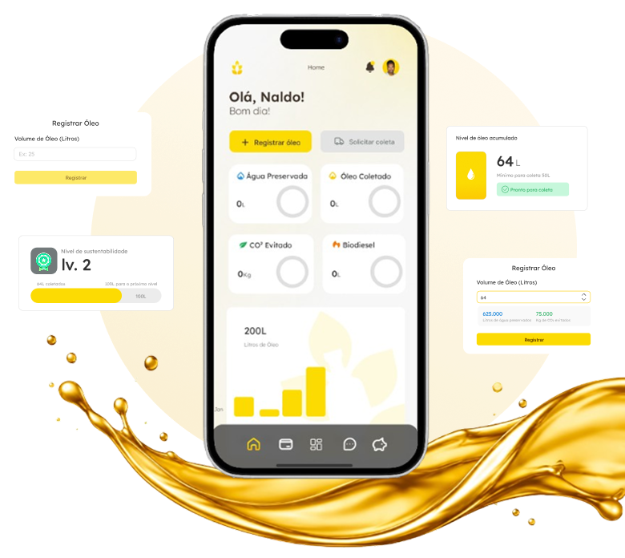

Biodiesel
O óleo é processado e transformado em combustÃvel renovável, menos poluente e mais sustentável.
Conectamos empresas, cidadãos e pontos de coleta para tornar o descarte de óleo de cozinha mais simples, eficiente e sustentável.
Transformado em biodiesel e outros produtos
Acompanhe seus indicadores ambientais em tempo real
Do descarte à destinação final, tudo rastreado.


1 litro de óleo pode poluir até 25 mil litros de água.
Rotas inteligentes geram economia e menos emissão de poluentes.
Mais sustentabilidade, conscientização e futuro.

Cadastre seu estabelecimento ou ponto de coleta.
Informe a quantidade de óleo acumulado.
Receba a previsão ideal de coleta.
Agende a coleta de forma prática.
Acompanhe o impacto e faça diferença.
Resultados que mostram a força da sua atitude

Solução completa para negócios que querem ser mais sustentáveis
Descarte correto, fácil e perto de você. Pequenas atitudes, grandes mudanças.

Descubra o local mais próximo e agende sua coleta de forma rápida e simples.
Após o descarte correto, o óleo usado se transforma em novos recursos que geram impacto positivo
O óleo é processado e transformado em combustÃvel renovável, menos poluente e mais sustentável.
Usado na fabricação de sabões e produtos de limpeza, ajudando a reduzir o impacto ambiental.
O óleo pode virar matéria-prima para velas artesanais e produtos para uso doméstico.
Também pode ser utilizado na produção de lubrificantes e outros produtos industriais.
Nosso aplicativo facilita todo o processo e mostra o impacto positivo que você gera a cada coleta.

Nossa tecnologia oferece praticidade, segurança e impacto positivo para você e para o planeta.
Agende coletas de forma simples e rápida, quando e onde precisar.
Cada litro de óleo coletado evita a poluição de milhares de litros de água.
Acompanhe suas coletas e impacto ambiental em uma dashboard intuitiva.
Receba certificados que comprovam sua contribuição para o meio ambiente.
Reduza custos operacionais e contribua para um futuro mais sustentável.
Conectamos empresas e coletores para um ciclo sustentável e colaborativo.
Seguimos padrões rigorosos para garantir segurança, qualidade e um impacto real no meio ambiente.
Consumo e Produção Responsáveis
Operação alinhada à redução de emissões
Processos rastreáveis e ambientalmente responsáveis
Conformidade com normas ambientais e de segurança
A plataforma disponibiliza um certificado de destinação correta para empresas e parceiros que realizam o descarte por meio da plataforma. O documento comprova que o óleo foi encaminhado para a destinação adequada e pode ser utilizado como registro de responsabilidade ambiental.
Após realizar o descarte ou a coleta, os dados são registrados no aplicativo. O usuário pode acompanhar informações como quantidade de óleo destinada corretamente, estimativa de impacto ambiental evitado e sua contribuição para a reciclagem, por meio de um painel atualizado conforme os registros são realizados.
A Olius possui um sistema de benefÃcios baseado na participação do usuário. Conforme a quantidade de óleo destinada corretamente e a frequência de participação aumentam, o usuário pode avançar entre nÃveis, como Bronze, Prata e Ouro, desbloqueando benefÃcios e reconhecimentos dentro da plataforma.
Após pesquisas, estabelecemos uma quantidade mÃnima de 20 litros para solicitar uma coleta corporativa. Quantidades menores podem ser direcionadas aos pontos de coleta parceiros, tornando a logÃstica mais eficiente.
Para o cadastro de um coletor parceiro, podem ser solicitados documentos que comprovem sua identidade e regularidade, como documento de identificação, CPF/CNPJ, comprovante de endereço e documentos ou autorizações relacionados à atividade de coleta, quando aplicáveis. A documentação pode variar conforme o tipo de coletor e a legislação.
Espere o óleo esfriar completamente e armazene-o em garrafas PET limpas e secas, fechando bem a tampa para evitar vazamentos até o momento da entrega ou coleta.